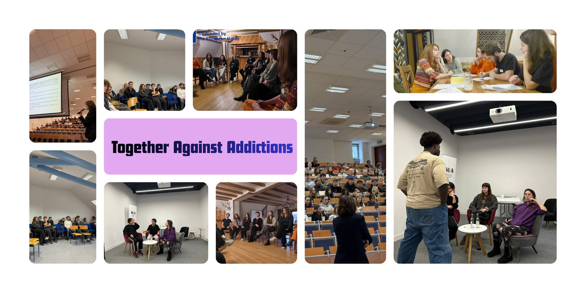
Youth participation project · Project story
Razem Przeciw Uzależnieniom: Together Against Addictions
Young people taking a stand against addiction in their own community.
- When
- 2025–2026
- Where
- Krosno & Opole, Poland
- Who
- 15 young participants
- Subjects
- Local community, addiction prevention
01
Why we started
“Together Against Addictions” (Razem Przeciw Uzależnieniom) was a youth participation project run by Fundacja Patrz Globalnie, empowering young people to tackle alcohol abuse and its impact on their local community through education, research, advocacy and creative action.
The project brought together 15 young participants, including young people directly or indirectly affected by addiction and participants with fewer opportunities. Through the project, they turned their lived experience and motivation for change into meaningful civic engagement.
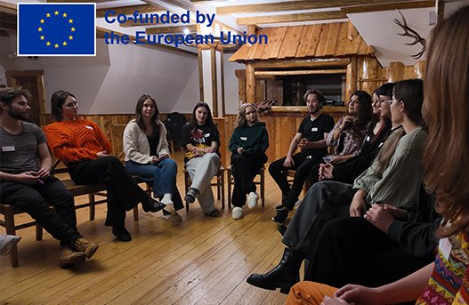
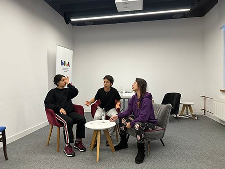
02
Learning from experts
Participants first deepened their understanding of addiction, prevention and recovery through workshops with therapists, experts and prevention professionals.
A mobility to Opole expanded their knowledge further through meetings with addiction specialists and youth mental health advocates.
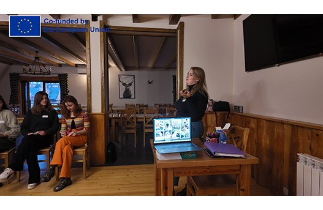
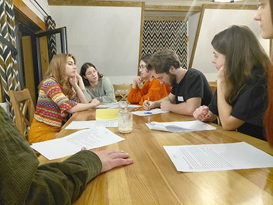
03
Mapping the risks
Building on this foundation, participants carried out field research in Krosno into alcohol availability and alcohol-related risks in their local environment. They collected data, ran surveys, and created a digital Alcohol Danger Zone Map highlighting areas of concern in the city.
Using their findings, the group developed advocacy recommendations and entered into dialogue with local decision-makers and public institutions. Their work fed into wider local discussions on alcohol policy and youth perspectives in community decision-making.
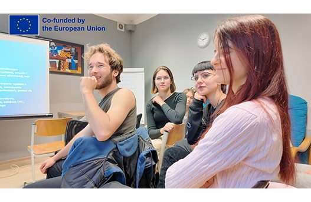
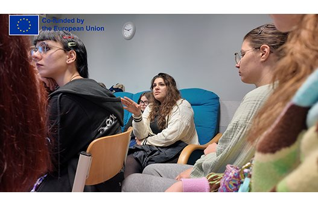
04
Theatre of the Oppressed
A major creative part of the project was a Theatre of the Oppressed performance based on the participants’ research and personal experiences. It was performed publicly at the State Academy of Applied Sciences in Krosno and at the BWA Art Gallery in Krosno, drawing audiences into reflection and dialogue on addiction.
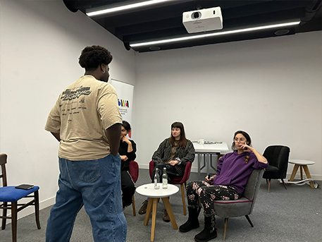
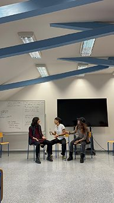
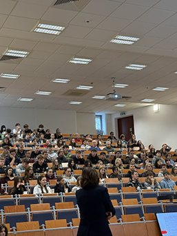
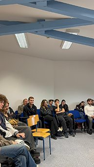
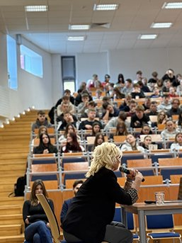
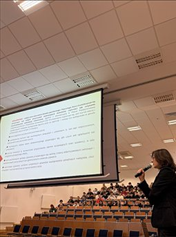
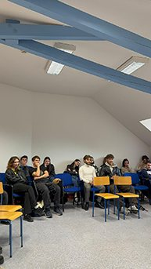
The performance and the conference · scroll sideways for more →
05
The conference
The project ended with a large public conference on addiction prevention, attended by over 350 people, where young people presented their work alongside experts and practitioners.
Through its mix of education, research, advocacy and public engagement, the project created lasting impact for the participants and the wider community.
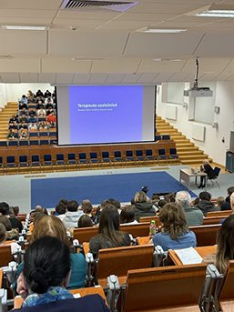
The power of youth-led action in addressing social issues.
All resources and photos ↗ Back to all projects